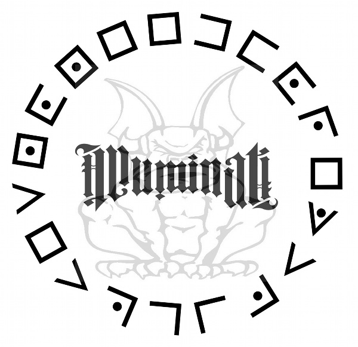

When physicist Leonardo Vetra is found murdered with the word “Illuminati” branded onto his chest, Maximilian Kohler, the director of CERN (European Council for Nuclear Research), contacts Harvard symbologist Robert Langdon for help. Kohler has Langdon flown to CERN. Langdon explains the role of the Illuminati—a secret society of artists, scientists, and freethinkers—as a long-standing enemy of the Catholic Church. While Langdon is explaining this, and learning more about Vetra’s research, Vetra’s adopted daughter, Vittoria, who is also a physicist, joins them.
Vittoria and her father had created antimatter in a CERN lab. This was doubly important to her father because he was a priest, and the discovery promised to give humanity access to the secrets of creation. However, it is also a great threat because antimatter explodes when it comes into contact with normal matter. This becomes a pressing issue when they learn that their biggest sample has been stolen, and the battery that generates the magnetic field (and keeps the antimatter stable) has only a twenty-four-hour life span.

CERN is then contacted by the Vatican: a threat has been issued indicating that the antimatter is hidden at the Vatican. This is especially dangerous since a Conclave is being held to elect a new pope to replace the one who recently died. Kohler cannot go immediately because of his poor health, but Langdon and Vittoria make the journey. However, the pair find it impossible to convince Olivetti, the head of the Swiss Guard, that the threat is real. In fact, the commander locks them away while he investigates. Langdon uses his knowledge of Vatican protocol to get them released, appealing to the “camerlengo” (the pope’s chamberlain), who is in charge until the election of the new pope is complete. While they are pleading their case, a representative of the Illuminati calls. He tells them that not only is the antimatter hidden in the Vatican, but the Illuminati have kidnapped the four cardinals who are the favorites to be elected as the new pope. They will kill them, one per hour, at 8, 9, 10, and 11 p.m., at churches around Rome, building the threat before the bomb goes off at midnight, destroying the Vatican, killing many of its leaders, and incinerating much of its wealth.
The camerlengo and the commander of the Swiss Guard decide to let the Conclave continue while they search for the bomb and the missing cardinals. In the Vatican archives, Langdon finds clues to where the cardinals will be killed in a manuscript by Galileo. (The murder sites will be located at places important to the Illuminati, and each candidate will be killed according to one of the four elements: earth, air, fire, and water.) Langdon leads the Swiss Guard to the Pantheon. Langdon and Vittoria enter the church. However, through a conversation with the church caretaker, Langdon realizes they are in the wrong place.
Dan Brown was born on June 22, 1964 in Exeter, N.H. He attended Phillips Exeter Academy and graduated from Amherst College. His first novel was Digital Fortress. In his next, Angels & Demons, Brown introduced "professor of symbology" Robert Langdon. Brown returned to Langdon with The Da Vinci Code which proved immensely popular and sold more than 80 million copies worldwide.